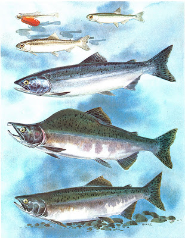

The Chinook Salmon, also known as the King Salmon, is the largest species of Pacific salmon. They are highly prized for their rich flavor and firm texture. Chinook Salmon are known for their distinctive red flesh and high oil content, making them ideal for grilling, baking, or smoking.
These salmon are native to the Pacific Northwest, including Alaska, and are known for their epic upstream migration to spawn in freshwater rivers and streams. Chinook Salmon play a vital role in the ecosystem, providing food for other wildlife and contributing to the nutrient cycle of the region.
Chinook Salmon populations have faced challenges due to habitat loss, overfishing, and climate change. Conservation efforts aim to protect and restore their spawning grounds and ensure sustainable fishing practices to preserve this iconic species for future generations.
Sockeye Salmon
Sockeye Salmon, also known as Red Salmon, are a species of Pacific salmon known for their distinctive red flesh and rich flavor. They are prized by anglers and seafood enthusiasts alike for their firm texture and delicious taste.
These salmon are native to the waters of the Pacific Northwest, including Alaska, where they undertake epic migrations from the ocean to freshwater rivers and streams to spawn. Sockeye Salmon are known for their incredible journey upstream, navigating through rapids and waterfalls to reach their spawning grounds.
Sockeye Salmon play a vital role in the ecosystem, serving as a key food source for other wildlife and contributing to the nutrient cycle of the region. They are also economically important, supporting commercial and recreational fishing industries.
However, Sockeye Salmon populations face threats from habitat destruction, overfishing, and climate change. Conservation efforts aim to protect and restore their spawning habitats and ensure sustainable fishing practices to preserve this iconic species for future generations.
Coho Salmon
Coho Salmon, also known as Silver Salmon, are a species of Pacific salmon known for their silver-colored skin and delicate flavor. They are highly valued by anglers and seafood lovers for their firm texture and versatility in cooking.
These salmon are native to the Pacific Northwest, including Alaska, where they undertake remarkable migrations from the ocean to freshwater rivers and streams to spawn. Coho Salmon are known for their acrobatic leaps and powerful swimming as they navigate upstream to reach their spawning grounds.
Coho Salmon play a crucial role in the ecosystem, serving as a vital food source for other wildlife and contributing to the nutrient cycle of the region. They are also important economically, supporting commercial and recreational fishing industries.
However, Coho Salmon populations face threats from habitat degradation, overfishing, and climate change. Conservation efforts focus on protecting and restoring their spawning habitats and implementing sustainable fishing practices to ensure the long-term survival of this iconic species.
Pink Salmon
Pink Salmon, also known as Humpback Salmon, are the smallest and most abundant of the Pacific salmon species. They are known for their distinctive pink flesh and mild flavor. While they are smaller compared to other salmon species, Pink Salmon are prized for their affordability and versatility in cooking.
These salmon are native to the Pacific Northwest, including Alaska, where they undertake remarkable migrations from the ocean to freshwater rivers and streams to spawn. Pink Salmon are known for their rapid swimming and acrobatic leaps as they navigate upstream to reach their spawning grounds.
Pink Salmon play a significant role in the ecosystem, serving as an important food source for other wildlife and contributing to the nutrient cycle of the region. They are also economically important, supporting commercial and recreational fishing industries.
Despite their abundance, Pink Salmon populations face threats from habitat degradation, overfishing, and climate change. Conservation efforts focus on protecting and restoring their spawning habitats and implementing sustainable fishing practices to ensure the long-term survival of this iconic species.

Chum Salmon
Chum Salmon, also known as Dog Salmon, are a species of Pacific salmon known for their distinctive appearance and rich flavor. They are the second largest of the Pacific salmon species and are valued for their firm texture and versatility in cooking.
These salmon are native to the Pacific Northwest, including Alaska, where they undertake remarkable migrations from the ocean to freshwater rivers and streams to spawn. Chum Salmon are known for their strong swimming abilities and remarkable resilience as they navigate upstream to reach their spawning grounds.
Chum Salmon play a vital role in the ecosystem, serving as an important food source for other wildlife and contributing to the nutrient cycle of the region. They are also economically important, supporting commercial and recreational fishing industries.
Despite their importance, Chum Salmon populations face threats from habitat destruction, overfishing, and climate change. Conservation efforts focus on protecting and restoring their spawning habitats and implementing sustainable fishing practices to ensure the long-term survival of this iconic species.